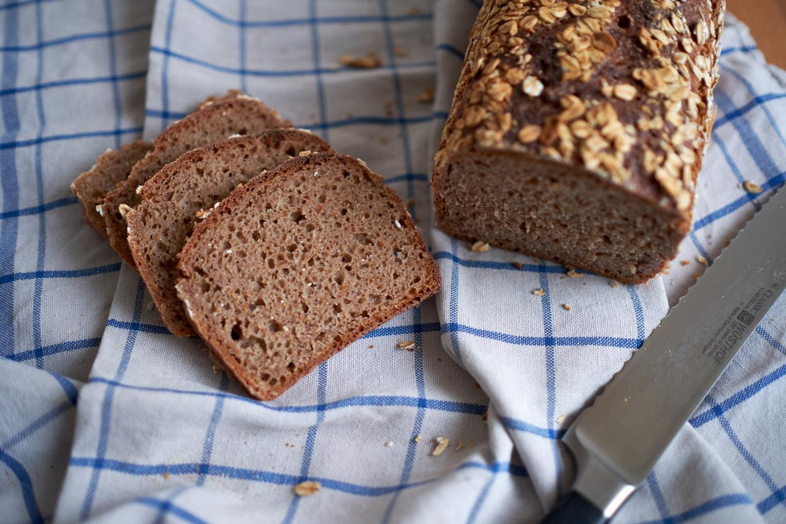
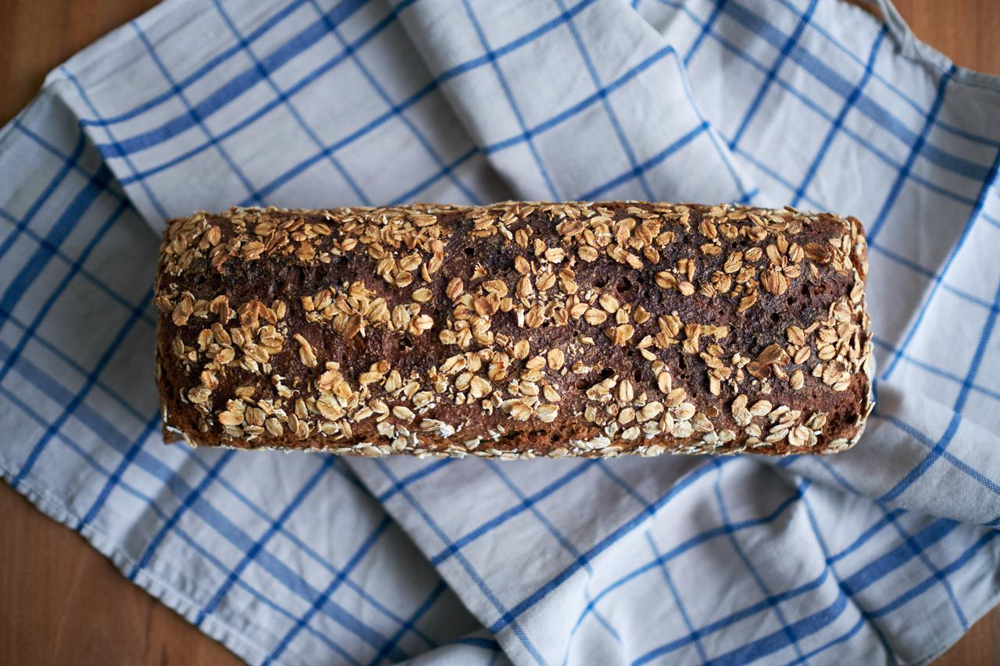

Gesunde Rezepte für Sauerteigbrot und Weiteres
Als ich angefangen habe, Brot zu backen, habe ich nach einem einfachen Vollkornbrot-Rezept gesucht, das ohne viel Aufwand und in einer Kastenform gebacken werden kann. Ich bin auf dieses Rezept gestoßen und habe lange Zeit nur dieses Brot gebacken. Im laufe der Zeit habe ich das Rezept angepasst und verändert und habe mich irgendwann auf das Folgende festgelegt. Meistens knete ich den Teig in der Küchenmaschine, was ich auch empfehle. Wer allerdings keine hat, kann den Teig auch per Hand mischen, kneten ist hier nicht nötig und auch nicht möglich. Zeitlich ist das Rezept sehr flexibel und erfordert keine langen Gehzeiten und kann daher an einen vollen Terminplan angepasst werden.

Für das Quellstück das warme Wasser mit den Kernen oder Samen vermischen und abgedeckt im Kühlschrank lagern, bis es benötigt wird. Mindestens 8 Stunden quellen lassen.
Für den Sauerteig alle Zutaten mischen und abgedeckt bei Raumtemperatur 8-12 Stunden gehen lassen. Wenn der Sauerteig morgens angesetzt wird, kann abends das Brot gebacken werden. Alternativ kann der Sauerteig abends angesetzt werden und am nächsten Morgen erst gebacken werden. Für den Hauptteig alle Zutaten mischen. Am einfachsten geht das mit einer Küchenmaschine, da der Teig sehr klebrig und zäh ist. Per Hand oder mit einem sehr stabilen Löffel geht natürlich auch. Den Teig mit einer flexiblen Teigkarte vom Schüsselrand kratzen.
Den Teig nun abgedeckt 1 Stunde in der Schüssel gehen lassen.
Nach einer Stunde den Teig in eine gefettete (alternativ mit Backpapier ausgelegte) 30 cm Kastenform geben und die Oberfläche mit Wasser besprühen. Wer möchte, kann das Brot noch mit Haferflocken, Schrot oder Kernen bestreuen und diese leicht eindrücken.
Der Teig kann nun entweder bis zu 12 Stunden im Kühlschrank gehen oder eine Stunde bei Raumtemperatur.
Währenddessen den Ofen mindestens 30 Minuten auf 250 °C vorheizen. Das Brot 20 Minuten bei 250 °C backen, dann die Temperatur auf 200°C runterstellen und weitere 40 Minuten backen. 10 Minuten vor Backende das Brot vorsichtig aus der Form nehmen und ohne Form fertig backen. Wenn man unten draufklopft und es sich hohl anhört, ist das Brot fertig.

Wer gerne ein Brot "ohne Kerne" haben möchte, damit es die Kinder auch essen, kann das Quellstück auch einfach weglassen. Hier kommt der Vollkorngeschmack dann besser durch.